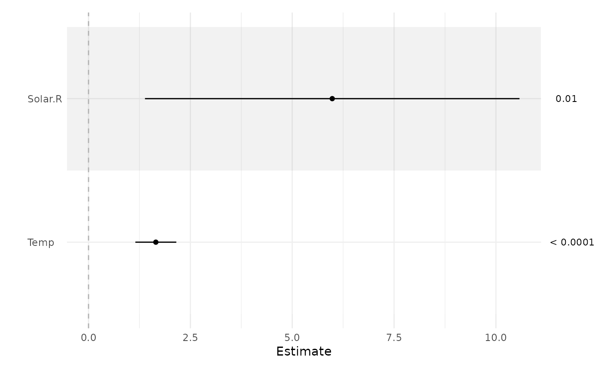
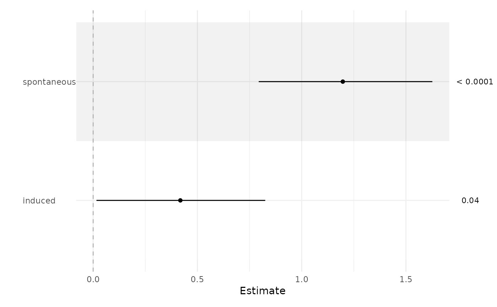
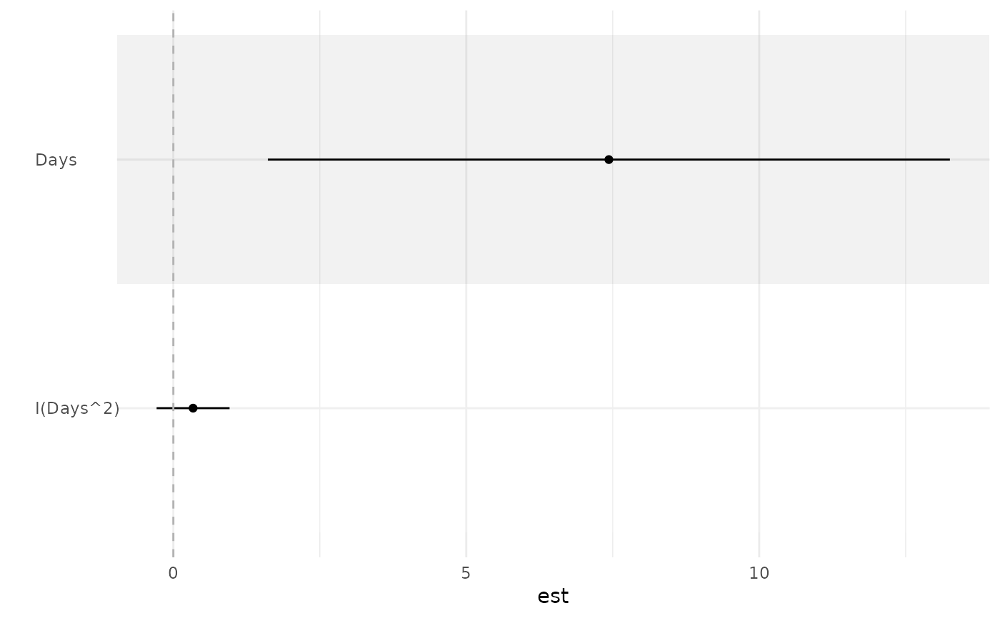
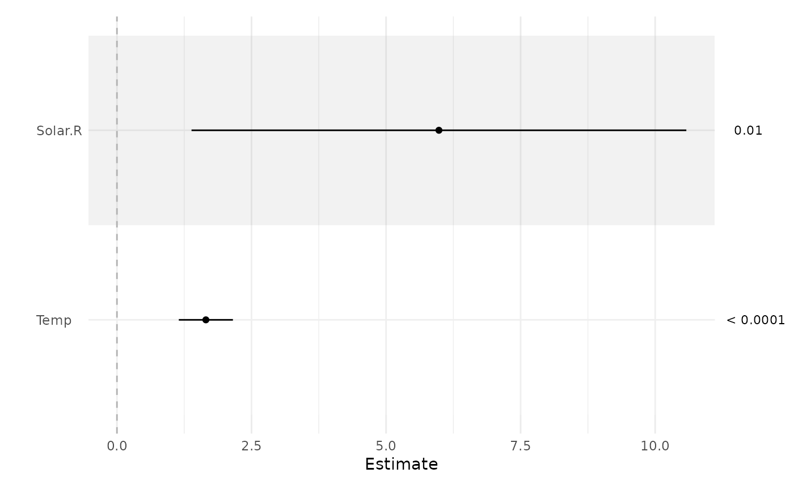
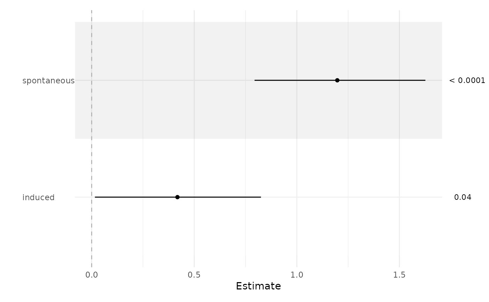
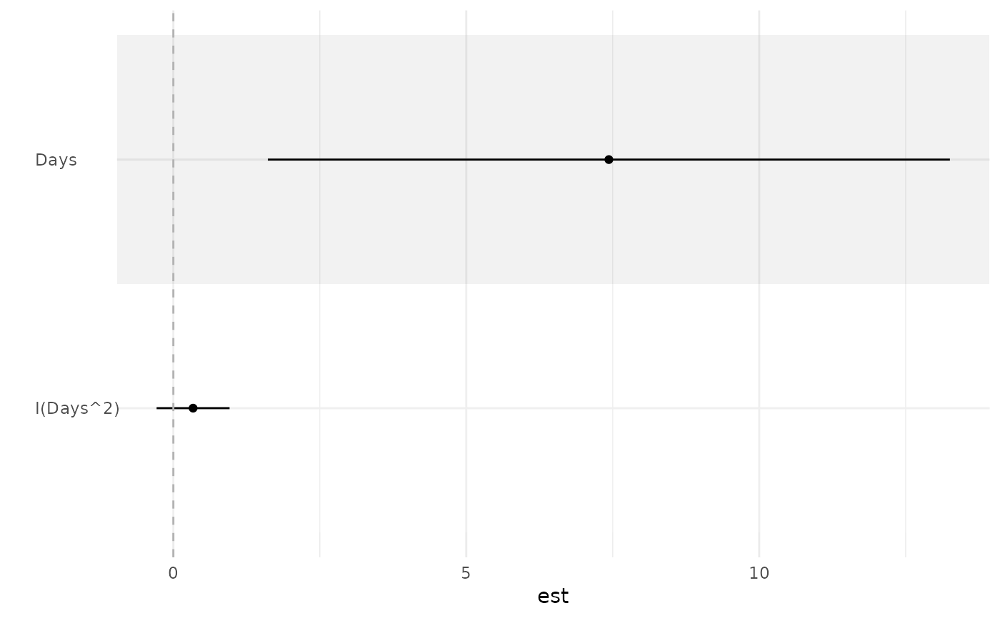

Create forest plot of confidence intervals
ci_plot.Rd"Forest plot"-style plotting of confidence intervals, typically from a regression model. Basic input is a matrix with columns of estimate/lower/upper, along with an optional 4th column for the p-value. Also works with a variety of models (lm/glm/coxph/etc).
Usage
ci_plot(obj, ...)
# S3 method for class 'data.frame'
ci_plot(
obj,
xlab = "Estimate",
null = 0,
exp = FALSE,
return = c("gg", "df", "list"),
...
)
# S3 method for class 'lm'
ci_plot(obj, tau, intercept = FALSE, p = TRUE, ...)
# S3 method for class 'glm'
ci_plot(obj, ...)
# S3 method for class 'merMod'
ci_plot(obj, tau, intercept = FALSE, ...)
# S3 method for class 'coxph'
ci_plot(obj, tau, p = TRUE, ...)
# S3 method for class 'matrix'
ci_plot(obj, ...)
# S3 method for class 'tbl_regression'
ci_plot(obj, ...)Arguments
- obj
The object to be plotted. This can be either:
A data frame with variables in the following order:
(Optional) Label - if omitted row names will be used instead
Estimate
Lower CI limit
Upper CI limit
(Optional) p-value
A model object (e.g., from
lm(),glm(), etc.), which will be automatically converted to a data frame in this format.
See examples for usage of both.
- ...
Not used; for S3 compatibility
- xlab
Horizontal axis label (default: 'Estimate')
- null
Draw a line representing no effect at this value (default: 0)
- exp
Should the axis labels be exponentiated because the estimates are on a log scale? (default: FALSE)
- return
One of the following:
gg: Return the complete plot as a patchwork / gg object (default)df: Return the formatted data frame (don't construct a plot at all)list: Return the plot components as a list (useful if you want to further modify one of the components; see examples)
- tau
A named vector of effect sizes; CIs will be shown for tau*beta. Any coefficients not included are given tau = 1. To exclude a variable completely, use tau = 0.
- intercept
Include a CI for the intercept? (default: FALSE)
- p
Include p-values? (default: TRUE)
Examples
# Supplying a data frame
b <- data.frame(1:9, 0:8, 2:10)
rownames(b) <- LETTERS[1:9]
ci_plot(b)
 rownames(b)[3] <- 'This one is long'
ci_plot(b)

# Supplying a fitted model object
fit <- lm(Ozone ~ Solar.R + Wind + Temp, airquality)
ci_plot(fit)
rownames(b)[3] <- 'This one is long'
ci_plot(b)

# Supplying a fitted model object
fit <- lm(Ozone ~ Solar.R + Wind + Temp, airquality)
ci_plot(fit)
 ci_plot(fit, tau = c(Solar.R = 100, Wind = 0))

ci_plot(fit, p = FALSE)
fit <- glm(case ~ spontaneous + induced, data = infert, family = binomial())
ci_plot(fit)
#> Waiting for profiling to be done...

ci_plot(fit, exp = TRUE, xlab = 'Odds ratio')
#> Waiting for profiling to be done...
library(lme4)
#> Loading required package: Matrix
fit <- lmer(Reaction ~ Days + I(Days^2) + (1 | Subject), sleepstudy)
ci_plot(fit)

library(survival)
fit <- coxph(Surv(time, status) ~ trt + karno, veteran)
ci_plot(fit)
fit <- lm(Ozone ~ Solar.R + Wind + Temp, airquality)
gtsummary::tbl_regression(fit) |> ci_plot()
#> Error in check_pkg_installed(c("broom", "broom.helpers")): The packages "broom" (>= 1.0.5) and "broom.helpers" (>= 1.17.0) are
#> required.
ci_plot(fit, tau = c(Solar.R = 100, Wind = 0))

ci_plot(fit, p = FALSE)
fit <- glm(case ~ spontaneous + induced, data = infert, family = binomial())
ci_plot(fit)
#> Waiting for profiling to be done...

ci_plot(fit, exp = TRUE, xlab = 'Odds ratio')
#> Waiting for profiling to be done...
library(lme4)
#> Loading required package: Matrix
fit <- lmer(Reaction ~ Days + I(Days^2) + (1 | Subject), sleepstudy)
ci_plot(fit)

library(survival)
fit <- coxph(Surv(time, status) ~ trt + karno, veteran)
ci_plot(fit)
fit <- lm(Ozone ~ Solar.R + Wind + Temp, airquality)
gtsummary::tbl_regression(fit) |> ci_plot()
#> Error in check_pkg_installed(c("broom", "broom.helpers")): The packages "broom" (>= 1.0.5) and "broom.helpers" (>= 1.17.0) are
#> required.